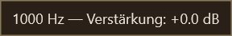
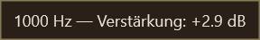

Tooltips M8-T8 — amostras inspecionadas
Capturas reais em perfil isolado; aceite visual humano pendente.
tooltip-popup.pngt8-ar-shuffle-popup.pngt8-ar-disable-shuffle-popup.png
t8-de-band-popup.png
t8-de-current-gain-popup.pngt8-ja-balance-popup.pngt8-hi-shuffle-popup.png